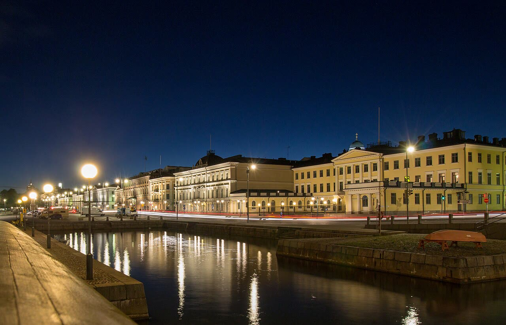

Bild: Mosca chiede la Finlandia fuori dalla Nato. Il Cremlino nega
A nostro avviso è un'indiscrezione di una sola testata, smentita solo in parte: se fosse vera, l'Italia, che siede nel gruppo europeo dei negoziati, dovrebbe dire prima del tavolo cosa non è trattabile.
Redazione Contrappunto · aggiornato il 13.11.2026


Il 10 e l'11 novembre ad Abu Dhabi, negli Emirati, Russia e Ucraina sono tornate a trattare direttamente, con la mediazione degli Stati Uniti. Venerdì 13 novembre il quotidiano tedesco Bild ha scritto che in quei colloqui la Russia avrebbe avanzato richieste che vanno oltre l'Ucraina: tra queste, la Finlandia fuori dalla Nato. Il portavoce del Cremlino ha negato. Conta per noi perché venerdì a Dublino i leader europei hanno deciso che la squadra europea per i negoziati sarà fatta dalle istituzioni Ue e dall'E5, di cui fa parte l'Italia (lo abbiamo raccontato il 13 novembre in «Europa al tavolo con Putin: il sì lo dice Witkoff, il Cremlino non conferma»).
Vedi di più: 5 parole spiegate, cosa si racconta
Cosa si raccontaSecondo la Bild, rilanciata dal Giornale, da Repubblica, dal Messaggero e da Tgcom24, e da Yle in Finlandia, Mosca avrebbe chiesto la Finlandia fuori dalla Nato, il divieto di basi Nato nei paesi baltici, il Donbass intero e nessuna truppa europea in Ucraina; per la Moldavia, un nuovo assetto con la Transnistria e la Gagauzia. Il Giornale scrive che la Bild cita «fonti diplomatiche»; Yle, che il piano sarebbe nato nella cerchia di Putin. Il portavoce Peskov, secondo TASS, nega che si sia parlato dell'uscita di Stati dalla Nato. Il governo di Helsinki respinge l'idea. [il Giornale] [la Repubblica] [Il Messaggero] [TgCom24] [Yle (Yleisradio)] [TASS]
- Bild
- Quotidiano tedesco. Qui è l'unica fonte della notizia: le altre testate la riprendono.
- Peskov
- Dmitry Peskov, portavoce del presidente russo Putin: parla a nome del Cremlino, la sede della presidenza a Mosca.
- Transnistria e Gagauzia
- Due regioni della Moldavia, paese tra Romania e Ucraina che vuole entrare nell'Unione europea. La Transnistria è separatista e filorussa, con truppe russe; la Gagauzia è una regione autonoma.
- E5
- Il gruppo di cinque paesi (Francia, Germania, Italia, Polonia e Regno Unito) che, con le istituzioni europee, formerà la squadra europea nei negoziati sull'Ucraina.
- Finlandia e Nato
- La Finlandia è entrata nella Nato nel 2023; l'aveva chiesto nel 2022, dopo decenni fuori dalle alleanze militari. La Nato è l'alleanza militare occidentale guidata dagli Stati Uniti.
- La Bild scrive che ad Abu Dhabi la Russia ha chiesto la Finlandia fuori dalla Nato; per il Giornale cita «fonti diplomatiche», per Yle il piano viene dalla cerchia di Putin.
- Peskov, secondo TASS, risponde che di un'uscita dalla Nato non si è parlato; su Donbass, Moldavia e truppe europee non risulta una sua risposta.
- Il ministro della Difesa finlandese Häkkänen dice che la Nato non si negozia; non abbiamo trovato commenti della Nato.
Il Giornale, Repubblica, il Messaggero e Tgcom24 rilanciano la Bild: ad Abu Dhabi Mosca avrebbe chiesto la Finlandia fuori dalla Nato. Repubblica titola che il Cremlino nega; il Messaggero e Tgcom24 scrivono che la ricostruzione è smentita, ma Peskov, secondo TASS, ha risposto solo sull'uscita di Stati dalla Nato. Il Giornale parla di smentita «in parte». Una professoressa sentita da Yle ricorda che non sappiamo che fonte sia. A nostro avviso è un'indiscrezione di una sola testata, non provata. Se la Bild avesse ragione, l'Italia, che siede nell'E5, dovrebbe rispondere a richieste sulla Nato. [1] [2] [3] [4] [6] [5]
La verifica punto per punto4 passaggi, 6 fonti
Qui sotto ogni cosa scritta sopra, una per una, con le fonti. Confermato: lo dice un documento originale o più fonti lette. Plausibile: lo riportano fonti serie, ma non abbiamo letto l'originale. Discordante: le fonti danno numeri diversi, e diciamo quali. Ipotesi e Opinione sono il nostro ragionamento, separato dai fatti.
Cosa scrive la Bild
Il quotidiano tedesco Bild ha scritto venerdì 13 novembre che nei colloqui di Abu Dhabi la Russia ha proposto la Finlandia fuori dalla Nato e il divieto di basi Nato in Estonia, Lettonia e Lituania (Yle, il Giornale). Aggiunge il controllo russo sull'intero Donbass e sui territori occupati, Ucraina fuori dalla Nato ma libera di entrare nell'Ue (Yle, il Giornale), e nessuna truppa europea in Ucraina (Repubblica, Messaggero, Tgcom24). Per il Giornale, Odessa e Mykolaiv, porti ucraini, andrebbero smilitarizzate, con libertà di navigazione nel Mar Nero e nel Baltico. In cambio Mosca ritirerebbe le truppe dalla Transnistria e le armi nucleari dalla Bielorussia (Messaggero, il Giornale). Per il Giornale la Bild cita «fonti diplomatiche»; per Yle il piano nasce dalla cerchia di Putin.
Sull'assetto della Moldavia le testate non dicono la stessa cosa: tre «entità statali distinte» o «repubbliche separate» per il Messaggero e Tgcom24, uno «Stato federale» che comprende Transnistria e Gagauzia per il Giornale. Sul chi abbia presentato il piano: la «delegazione russa» per il Messaggero, «rappresentanti europei» ai quali sarebbe stato presentato informalmente per il Giornale e per Yle. Yle non cita la Moldavia. Senza il testo della Bild non possiamo sapere quale versione sia giusta.
Chi smentisce, chi risponde
Peskov, interpellato sulla richiesta di far uscire dalla Nato gli Stati membri, Finlandia compresa, ha risposto, secondo TASS: «I am not aware of this, no, no [proposals] were put forward. There was no such talk about this for sure». Il Giornale parla di smentita «in parte»; sulla Moldavia o sul Donbass non risulta una risposta. Il ministro della Difesa finlandese Antti Häkkänen ha detto a Yle che la questione non è negoziabile e che Mosca avanza richieste simili dal 2021; la ministra degli Esteri Elina Valtonen, che decidono la Finlandia e l'alleanza. Katri Pynnöniemi, professoressa di politica di sicurezza russa all'Università di Helsinki, dice a Yle che non si conoscono i dettagli né la fonte.
Il nostro punto
Finché la Bild non dice chi ha parlato, resta un'indiscrezione di una sola testata, smentita solo in parte. Se avesse ragione, l'E5, di cui fa parte l'Italia, andrebbe a un tavolo con in agenda la Nato e i porti ucraini di Odessa e Mykolaiv: prima di sedersi, il governo dica cosa per l'Italia non si tratta e con quale mandato.
Fonti6, tutte con il link
- Ucraina, il presunto ultimatum di Putin all'Europa: «Finlandia fuori dalla Nato e tutto il Donbass alla Russia». Ma Mosca smentisce (13 novembre 2026; archivio d54b45762a504) (il Giornale) · consultata il 13.11.2026
- Guerra Ucraina - Russia. Bild: «Mosca chiede Finlandia fuori dalla Nato». Cremlino nega (diretta del 13 novembre 2026; archivio de899a207950d) (la Repubblica) · consultata il 13.11.2026
- «Per far finire la guerra in Ucraina Putin vuole la Finlandia fuori dalla Nato e Moldavia divisa in tre» (13 novembre 2026; archivio d55b80e246ba2) (Il Messaggero) · consultata il 13.11.2026
- Guerra Ucraina, Bild: «Mosca chiede Finlandia fuori dalla Nato e Moldavia divisa». Il Cremlino smentisce (13 novembre 2026; archivio d87c8d2327c1f) (TgCom24) · consultata il 13.11.2026
- Russia demands Finland leave Nato in Ukraine peace talks, Bild reports (13 novembre 2026; archivio df2f65ee3291e; con Yle 74-20256828 e 74-20256835) (Yle (Yleisradio)) · consultata il 13.11.2026
- No talk about NATO members withdrawal from alliance at Abu Dhabi talks — Kremlin (13 novembre 2026; archivio d06b0e4d74fad) (TASS) · consultata il 13.11.2026
Testo preparato con strumenti di intelligenza artificiale e pubblicato senza revisione umana. Come lavoriamo